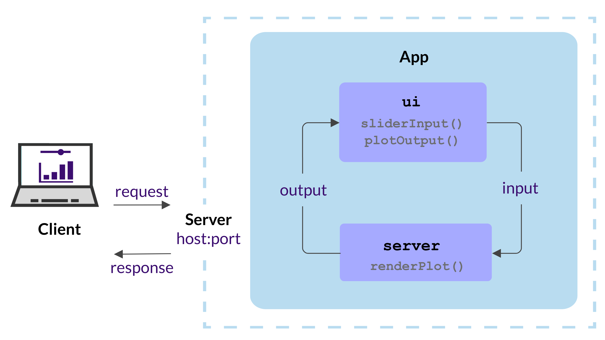

Shiny in Docker
This section is based on the analythium/shinyproxy-hello GitLab project. The demo Shiny app displays a slider and a histogram inspired by the example-01-hello Shiny example. The same application we build in the Shiny chapter.
The analythium/shinyproxy-hello project contains our demo Shiny app in the app folder:
We will review some of the other files as well, particularly the Dockerfile and .gitlab-ci.yml.
Pull image
We can pull the image made from the GitLab project's
Gcontainer registry
using the docker pull CLI command (we need to have the Docker Desktop running
on our local machine):
Image tag
The image is tagged as REGISTRY/USER/PROJECT/IMAGE:TAG. In this case the TAG
is latest which is the default tag when not specified otherwise.
(When the REGISTRY os not provided, Docker uses the Docker Hub as the default).
Authentication
We don't need to authenticate for public images (like this one), but in case we are trying to pull a private image from a private GitLab project, we need to log into the GitLab Container registry as:
This command will ask for our credentials interactively. If you want to provide your username and password.
caution
It is recommended to use a personal access token (PAT) instead of your password because PAT can have more restricted scopes, i.e. only used to access the container registry which is a lot more secure.
where ~/my_password.txt is a file with the PAT in it,
USER is the GitLab username.
Run container
After pulling the image, we can use docker run to run a command in a new container
based on an the image. We use the -p 4000:3838 argument and the image tag:
The -p is a shorthand for --publish, that instructs Docker to publish a
container’s port to the host port. In our example, 3838 is the container's port
which is mapped to the 4000 port of the host machine. As a result, we can
then visit 127.0.0.1:4000 where we'll find the Shiny app.
Hit Ctrl+C to stop the container.
Read all about the docker run command here. We well learn about the 3838 port in a bit.
Shiny host and port
When we talked about runApp we did not review all the possible arguments to this R function. Besides the app location (app object, list, file, or directory)
there are two other important arguments:
host: this defines the IP address (defaults to 'localhost': 127.0.0.1)port: TCP port that the application should listen on; a random port when no value provided
When we run the shiny app locally, we see a message Listening on http://127.0.0.1:7800
or similar, which is the protocol (HTTP), the host address, and the port number.
The Shiny app is running in a web server that listens to client requests,
and provides a response.

Build image
Let's create a file named Dockerfile (touch Dockerfile) then
open the file and copy the following text into the file then save:
To build the image from the Dockerfile, run
The -t argument is the tag, the . at the end refers to the context of the build, which is our current directory (i.e. where the Dockerfile resides) with a set of files based on which the image is built.
Push image
We can push the locally build Docker image to the container registry:
note
The image tag should start with the registry name unless you are pushing to Docker Hub.
Dockerfile
Let's review the file line by line. The full Dockerfile reference can be found here.
The FROM instruction initializes a new build stage and sets the base image.
We take the latest r-base image from the rocker project (see on Docker Hub):
The LABEL instruction is optional, it adds metadata to an image, e.g. who to contact in case of issues or questions:
The RUN instruction executes the command in a new layer (a layer is modification to the image) on top of the current image. The following command updates the base image with a couple of libraries that are required by Shiny and related R packages (system dependencies):
The following RUN command uses the littler command line interface shipped with the r-base image to install the Shiny package and its dependencies:
The next command sets options in the Rprofile.site file which are going to be loaded by the R session. These options specify the Shiny host and port that runApp will use:
caution
We do not want the container to run as root. Running the container with root privileges allows unrestricted use which is to be avoided in production (read more about advantages here):
The following command creates a linux group and user, both called app.
This user will have access to the app instead of the default root user:
The WORKDIR instruction sets the working directory for subsequent instructions. We change this to the home folder of the app user which is /home/app:
The COPY instruction copies new files or directories from the source (our app folder containing the R script files for our Shiny app) and adds them to the filesystem of the container at the destination path (. refers to the current work directory defined at the previous step):
The next command sets permissions for the app user:
The USER instruction sets the user name (or UID) and optionally the user group (or GID) to use when running the image:
The EXPOSE instruction tells Docker which ports the container listens on at runtime. We set this to the Shiny port defined in the Rprofile.site file:
Finally, the CMD instruction closes off our Dockerfile.
The CMD instruction provides the defaults for an executing container.
There can only be one CMD instruction in a Dockerfile (only the last CMD will take effect). Our CMD specifies the executable ("R") and parameters for the executable () in an array. The -e option means we are running an expression that is shiny::runApp('/home/app'). The expression will run the Shiny app that we copied into the /home/app folder:
We can build the image using docker build by speficying the tag and the context:
CI/CD
The following continuous integration/continuous deployment (CI/CD) section assumes that we are using GitLab as our source control platform. Similar setup is possible with GitHub actions, but is a bit more complicated.
The following text should be added to .gitlab-ci.yml in the root of the
project:
This will build the Docker image and push it to the container registry. The pipeline results can be seen here, the image is here.
Further reading
Contact us!
Are you considering to build a Shiny app? Do you need advice about containers? Reach out to Analythium if you need commercial support and consulting services!